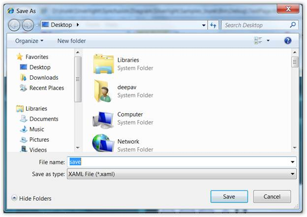

The Save operation can be done in three ways:
· Using the Save Dialog Box.
· File name with full path.
· Using Memory Stream
Using the Save Dialog Box.
To save the page, the following code can be used.
|
[C#]
DiagramControl dc = new DiagramControl(); dc.Save(); |
|
[VB]
Dim dc As New DiagramControl() dc.Save() |
The Save Dialog box will appear. Select the 'Save as Type' as XAML and select the location at which the file is to be saved and click the save button in the dialog box after specifying a name for the file.

Figure 158: Save Dialog Box
File name with path
The user can also specify the name of the file directly in the Save method.
|
[C#]
DiagramControl dc = new DiagramControl(); dc.Save(@"C:\TestPage.xaml"); |
|
[VB]
Dim dc As New DiagramControl() dc.Save("C:\TestPage.xaml") |
 Note: Essential Diagram Silverlight does not
support serializing bindings and bitmap Images.
Note: Essential Diagram Silverlight does not
support serializing bindings and bitmap Images.
Saving to a stream
The user can also save to a stream.
The following code snippet shows how it can be done.
|
[C#]
DiagramControl dc = new DiagramControl(); System.IO.MemoryStream stream = new System.IO.MemoryStream(); dc.Save(stream as System.IO.Stream); |
|
[VB]
Dim dc As New DiagramControl() Dim stream As New System.IO.MemoryStream() dc.Save(TryCast(stream, System.IO.Stream)) |